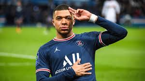
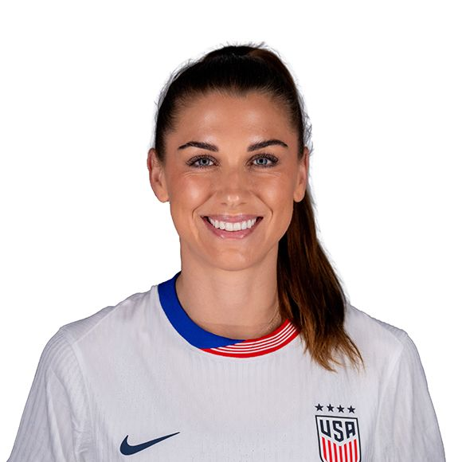

Publicaciones recientes
Ana:Lionel Messi habló sobre sus expectativas para el torneo, destacando la importancia del trabajo en equipo y la preparación física y mental de Argentina.

Carlos: Kylian Mbappé compartió su visión sobre el fútbol moderno y cómo la velocidad y técnica influyen en el desempeño de Francia en los partidos clave.
Laura: Alex Morgan, estrella de Estados Unidos, comentó sobre la motivación de representar a su país en casa, resaltando la pasión de los aficionados y el impacto del torneo en la promoción del fútbol femenino.
